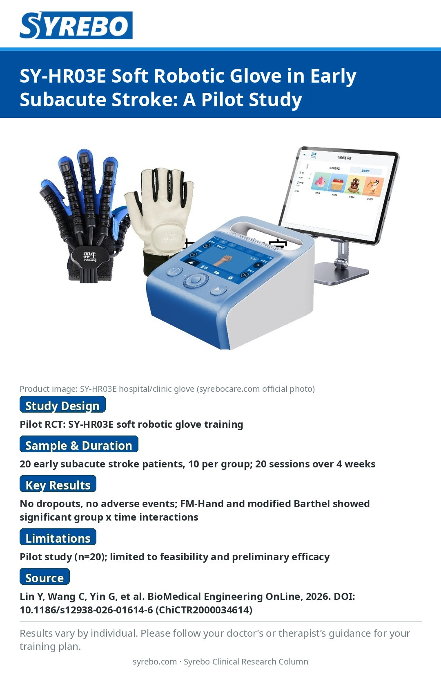

Soft Robotic Glove in Early Subacute Stroke: Feasibility Evidence for the SY-HR03E

Source: Lin Y, Wang C, Yin G, et al. Feasibility and preliminary efficacy of a soft robotic glove for hand rehabilitation in early subacute stroke: a pilot investigation. BioMedical Engineering OnLine, 2026. DOI: 10.1186/s12938-026-01614-6 (Clinical Trial Registry: ChiCTR2000034614).
Study limitations: Pilot study (n=20); conclusions are limited to feasibility and preliminary efficacy.
Note: Rehabilitation outcomes vary by individual. Please follow the training plan prescribed by your physician or therapist.